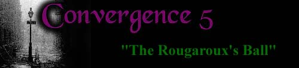

 |
|
|
From the Convergence
V program:
First, a little story. Seems that there's an old Cajun legend, passed The rougaroux share a trait with vampires, that is, they suck the blood of mortals. Furthermore, it is claimed that only a witch can make a rougarou - either by turning themselves into wolves or cursing others with lycanthropy. In this way, three horrific folk monsters are combined into one. Now here's the best part - the rougaroux are known to gather for grand balls, to which they ride on the backs of bats. Just imagine a werewolves' masquerade ball! And then help us create it. Sing it with us now... "Ahwoooooo! Werewolves in N'awlins. Ahwooooooo!"
The last event of Convergence V was The Rougaroux's Ball - a bal masque in grand New Orleans tradition. Held on Sunday night, the ball featured gothic, industrial, eighties, and silly oddities (Vanilla Ice?!) courtesy of the excellent C5 DJs - Sexbat, Lady Bathory, and Fross - who all definitely knew their crowd. A costume contest led by Caitlin R. Kiernan (author of SILK and THE DREAMING) afforded the exquisitely-dressed guests the opportunity to parade themselves around on stage and win stuff. Judges were DJ Lady Bathory, Cossack (of Goth Babe of the Week), Cusraque (of Boston's HELL, and CII organizer), and Trystan L. Bass (alt.gothic.fashion's FAQ mistress). Costume winners ran the gamut from victorian ladies to Boba Fett!
|